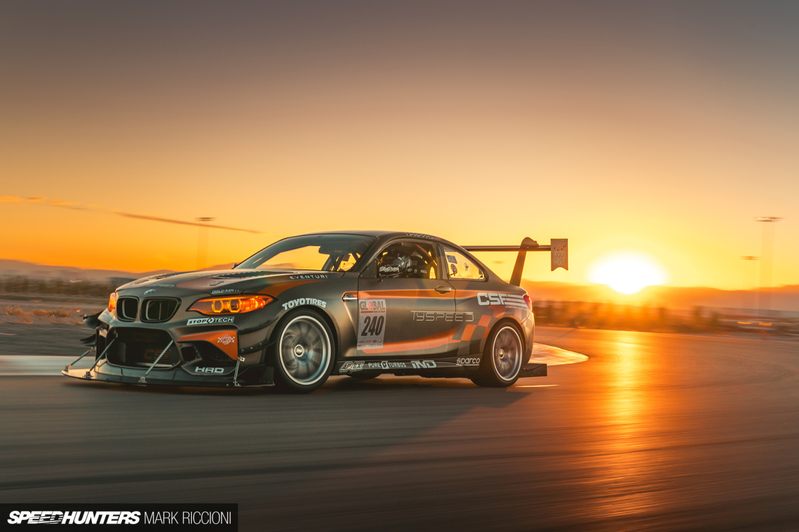
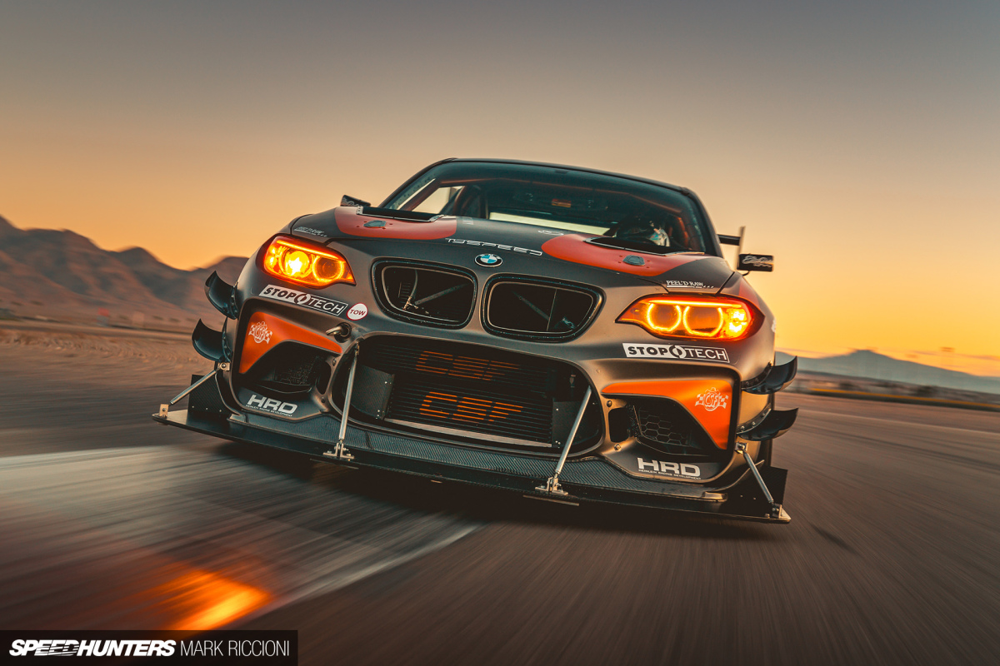
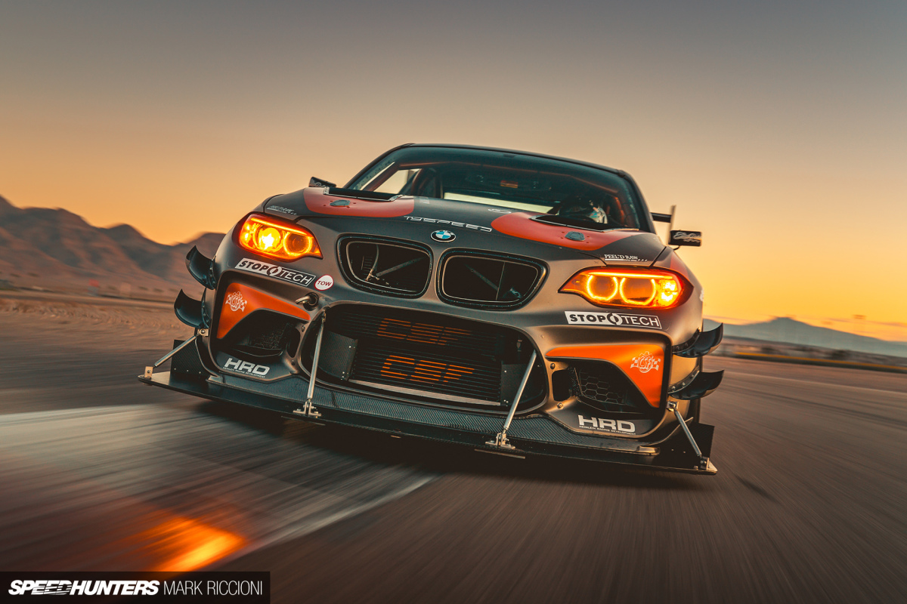
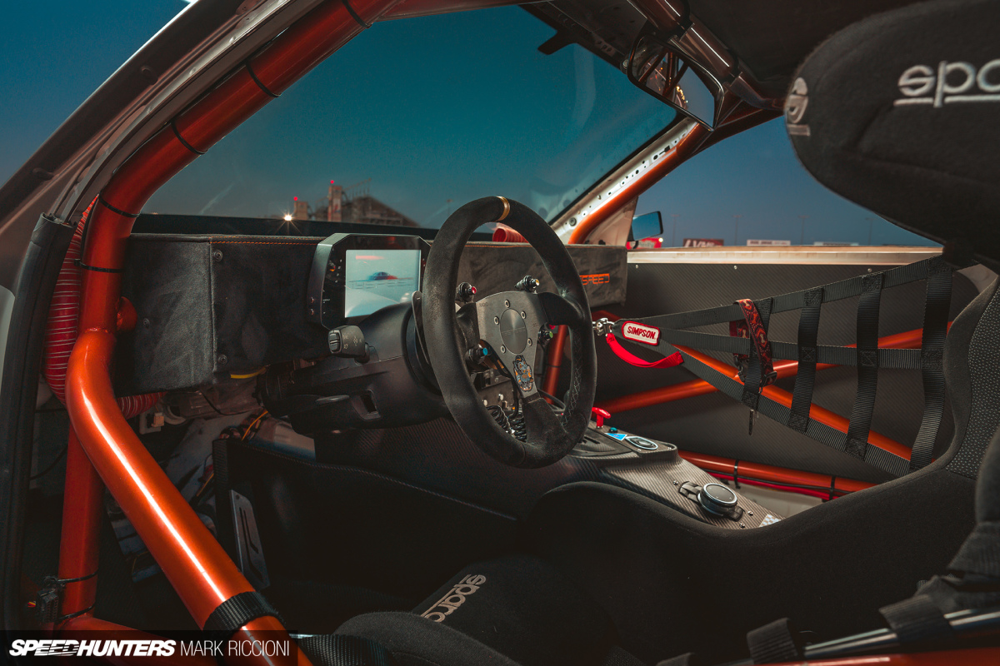
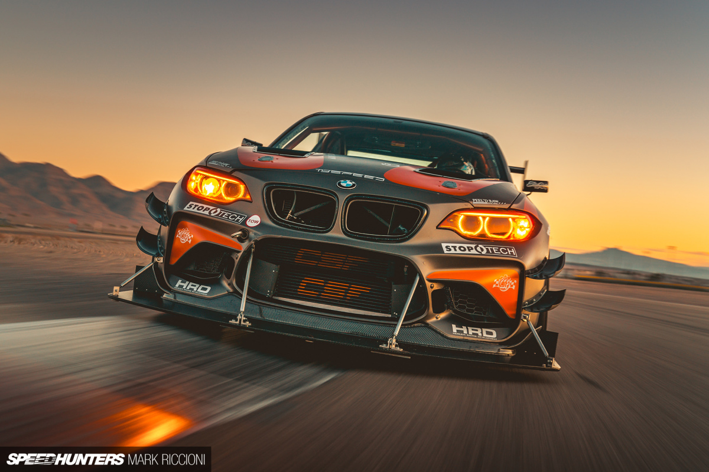

 


{kind=link}
Accidentally Building The World’s Wildest M2
From dealer forecourt to the summit of Pikes Peak in under two years – welcome the story of Tyler Pappas’ total lack of self-restraint.
This BWW M2 was supposed to be a road car to demonstrate the products and services that Tyspeed in New Jersey offer. It sounds simple enough, but fast forward 24 months and Tyler is hurtling up one of the most dangerous and iconic hill climb events in the world. It’s easy to see how this happened when meeting Tyler for the first time. We pulled up to Las Vegas Motor Speedway to be greeted by an aggressive looking M2, paired with a fantastically enthusiastic Tyler. He’s a funny dude, bubbling with energy. The car looks absolutely savage. I know we’re going to have a good time.
{kind=link}
What struck me first about the car is how well prepared it is. Not because race cars should be rough, but more the fact that this car was built and is maintained by Tyler himself. Being driver and engineer is never an easy task, let alone running a shop at the same time, but this does give him a unique opportunity to change things quickly and expedite development. The stock dashboard has double binnacles for the clocks and infotainment that really get in the way when scanning for apexes. The new flat-topped, Alcantara-trimmed dash is just one example of how Tyler’s thoughts have been applied to the car directly, with no filter. The whole thing is a very pure representation of what Tyler is thinking, which makes talking to him about it absolutely captivating. You can’t help but get on board with this car. It’s this can-do attitude that led Tyler to partner with Ravi Dolwani at CSF Radiators. At the start of Tyler’s journey, the M2 was a fresh car for the aftermarket. Since then it has been instrumental in the development and testing of CSF’s M2 cooling product range, and now sports no less than four CSF cores to control temperature. With over 500whp, they are very much needed. The cooling system is designed to allow Tyler to go flat-out for long periods, especially useful at Pikes Peak where the engine gets a full workout with restricted oxygen.

{kind=link}